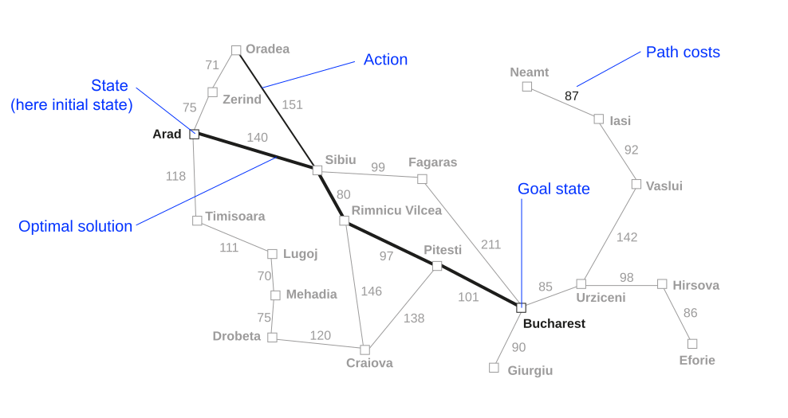
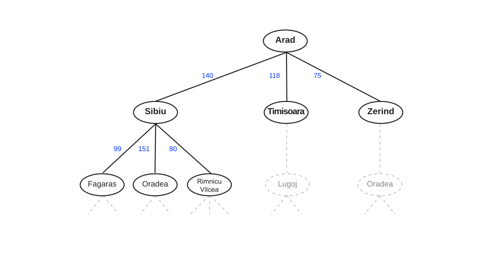
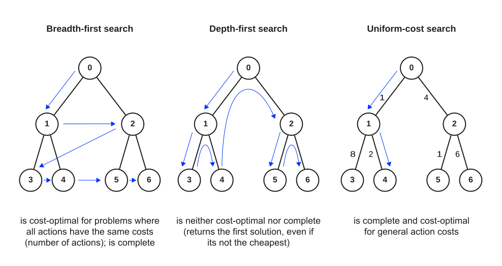
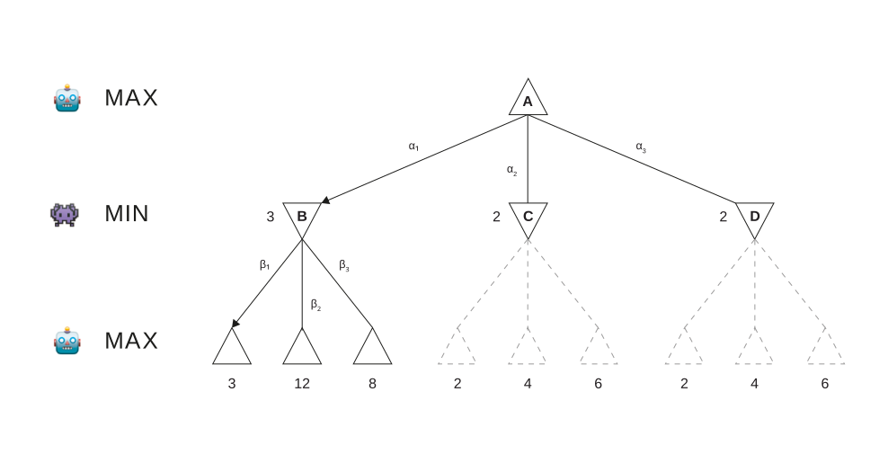
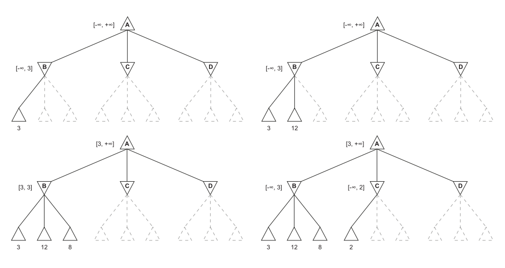
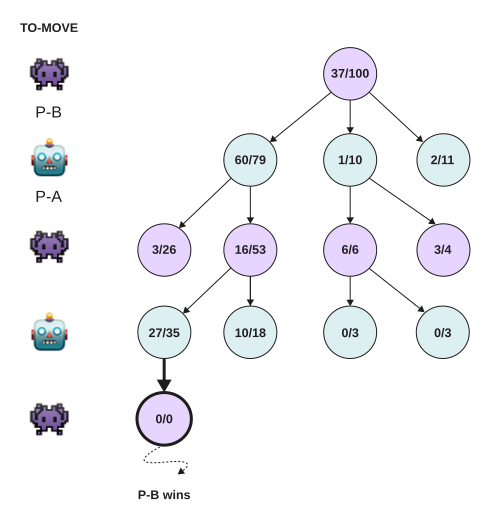
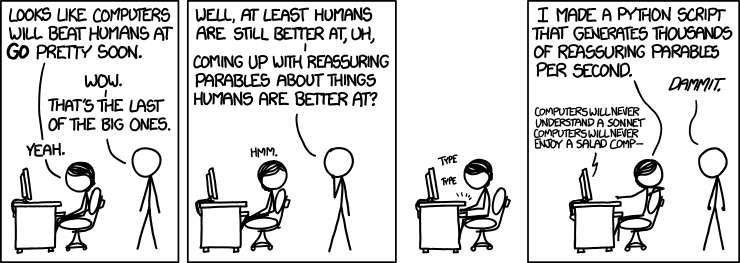

Introduction to AI (I2AI)
Neu-Ulm University of Applied Sciences
April 4, 2026
Agents in simple environments follow a four-phase process:
A search problem is formally defined by:


Problem formulation must follow goal formulation.
Is this statement true or false? Why?
There are six glass boxes in a row, each with a lock. Each of the first five boxes holds a key unlocking the next box in line; the last box holds a banana. You have the key to the first box and want the banana.
Write out all formal components:
10:00

| Algorithm | Evaluation function | Information used |
|---|---|---|
| Greedy best-first | \(f(n) = h(n)\) | Heuristic estimate to goal only |
| A* | \(f(n) = g(n) + h(n)\) | Actual path cost + heuristic estimate |
Key question: What information does each algorithm use to decide which node to expand next?
A* is cost-optimal if \(h(n)\) is admissible (never overestimates the true cost to goal).
Simplified graph (edge costs in parentheses):
Arad -> Sibiu (140) -> Fagaras (99) -> Bucharest (211);
Sibiu -> Rimnicu Vilcea (80) -> Pitesti (97) -> Bucharest (101)
Tasks
15:00


Instead of exhaustive traversal, MCTS uses repeated simulation:

Your task:
Can the MinMax algorithm be beaten by an opponent playing suboptimally?
Why or why not?
Search
Adversarial search
